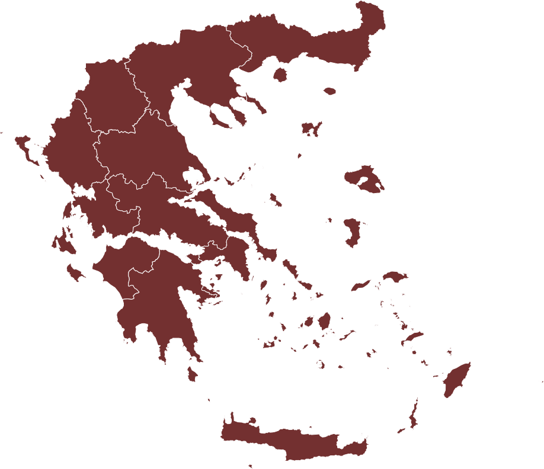

<!DOCTYPE html>
<html>

<head>
  <title>Visualized Ovid - Metamorphoses</title>
  <meta charset="UTF-8">
  <meta name="author" content="Katharina Hefele">
  <!-- Import my stylesheet -->
  <link rel="stylesheet" href="visualisierung.css">
  <!--Let browser know website is optimized for mobile-->
  <meta name="viewport" content="width=device-width, initial-scale=1">
  <!-- font-stylesheet -->
  <link rel="stylesheet" href="https://fonts.googleapis.com/css?family=Crimson+Text|Work+Sans:400,700">
  <!-- Favicon -->
  <link rel="icon" type="image/png" href="Bilder/Favicon Ovid.png">


  <!-- Site Name, Title, and Description to be displayed -->
  <meta property="og:image:secure_url" itemprop="image"
    content="https://khefele.github.io/Bilder/Favicon_Ovid_laechelt.png" />
  <meta property="og:image" itemprop="image" content="https://khefele.github.io/Bilder/Favicon_Ovid_laechelt.png" />
  <meta property="og:image:url" content="https://khefele.github.io/Bilder/Favicon_Ovid_laechelt.png" />
  <meta property="og:site_name" content="Visualized Ovid">
  <meta property="og:title" content="Visualisierung zu den Metamorphosen Ovids" />
  <meta property="og:description"
    content="Masterarbeitsprojekt an der Friedrich-Alexander-Universität Erlangen-Nürnberg zur Visualisierung der Metamorphosen Ovids. Made by Katharina Hefele." />
  <meta property="og:image:alt" content="Portrait des antiken Dichters Ovid, Ausdruck zu einem Lächeln bearbeitet" />
  <meta property="og:locale" content="de_DE">
  <meta property="og:type" content="website" />
  <meta property="og:image:type" content="image/png">
  <meta property="og:image:width" content="437">
  <meta property="og:image:height" content="405">
  <meta property="og:url" content="https://khefele.github.io/visualisierung.html" />

  <!-- Twitter -->
  <meta name="twitter:description"
    content="Masterarbeitsprojekt an der Friedrich-Alexander-Universität Erlangen-Nürnberg zur Visualisierung der Metamorphosen Ovids. Made by Katharina Hefele." />
  <meta name="twitter:image" content="https://khefele.github.io/Bilder/Favicon_Ovid_laechelt.png" />
  <meta name="twitter:title" content="Visualized Ovid" />


  <meta name="keywords" content="Ovid, Metamorphosen, Visualisierung">
  <!-- Bild, Titel und Beschreibung bei Verlinkung -->
  <meta name="description"
    content="Masterarbeitsprojekt an der Friedrich-Alexander-Universität Erlangen-Nürnberg zur Visualisierung der Metamorphosen Ovids. Made by Katharina Hefele." />
  <!-- MS Tile - for Microsoft apps-->
  <meta name="msapplication-TileImage" content="https://khefele.github.io/Bilder/Favicon_Ovid_laechelt.png">


</head>

<body>

  <div id="durchsichtigesDiv" style="width: 1px; height: 1px; position: absolute;"></div>


  <!----------- Navigations-Kategorien/Popover ------------------->
  <div id="kategorienUndPopoverDiv" style="position: relative; height: 100%;">

    <!----------- Taxonomie ------------------->
    <div id="taxonomie" class="kategory" style="height:100%; width:100%; position:absolute">
      <div id="fauna" class="taxonomieKategorie">
        <p class="titleTopleft">Fauna</p>
        <p class="percentTopright" id="countFauna"></p>
      </div>
      <div id="flora" class="taxonomieKategorie">
        <p class="titleTopleft">Flora</p>
        <p class="percentTopright" id="countFlora"></p>
      </div>
      <div id="elemente" class="taxonomieKategorie">
        <p class="titleTopleft">Elemente</p>
        <p class="percentTopright" id="countElemente"></p>
      </div>
      <div id="anthropomorphes" class="taxonomieKategorie">
        <p class="titleTopleft">Anthropomorphes</p>
        <p class="percentTopright" id="countAnthropomorphes"></p>
      </div>

      <!-- Hintergrundinfo-Button -->
      <!-- <div style="left: 85%; top: 2%; width: 48%; position: absolute;">
        <button class="hintergrundinfoButton" id="klassifikationInfoBtn">
          
          <div>Hintergrund-<br>information</div>
        </button>
      </div> -->

    </div>


    <!----------- Chronologie ------------------->
    <div id="chronologie" style="height:50%; display:none;">
      <div
        style="width: 90%; height:80%; background-color: rgba(227, 222, 216, 0.7); position: absolute; top: 12%; left: 4%; animation-name:slowOpacity; animation-duration: 3s;">
      </div>
      <!-- Hintergrundinfo-Button -->
      <!-- <div style="left: 85%; top: 2%; width: 48%; position: absolute;">
        <button class="hintergrundinfoButton" id="erzaehlfolgeInfoBtn">
          
          <div style="padding-top: 10%;">Hintergrund-<br>information</div>
        </button>
      </div> -->
    </div>

    <!----------- Geografie ------------------->
    <div id="geographie" style="position: relative; display: none;">
      <div id="bilddiv"
        style="left:10%; top: 20%; height:100%; position:absolute;animation-name:slowOpacity; animation-duration: 3s;">
        
      </div>

      <!-- Hintergrundinfo-Button -->
      <!-- <div style="left: 85%; top: 2%; width: 48%; position: relative;">
        <button class="hintergrundinfoButton" id="geographieInfoBtn">
          
          <div style="padding-top: 10%;">Hintergrund-<br>information</div>
        </button>
      </div> -->

    </div>

    <!----------- Geschlecht ------------------->
    <div id="geschlechtImg"
      style="height:100%; width:100%; position:absolute; display:none; animation-name:slowOpacity; animation-duration: 2s;">
      <div
        style="width: 700px; border-radius: 50%; height:700px; background-color: rgba(97, 56, 56, 0.0); position: absolute; top: 50%; left: 50%; transform: translate(-50%,-50%); animation-name:slowOpacity; animation-duration: 3s;">
      </div>
      <div
        style="width: 500px; border-radius: 50%; height:500px; background-color: rgba(194, 189, 184, 0.0); position: absolute; top: 50%; left: 50%; transform: translate(-50%,-50%); animation-name:slowOpacity; animation-duration: 3s;">
      </div>
      <div
        style="width: 250px; border-radius: 50%; height:250px; background-color: rgba(100, 100, 100, 0.0); position: absolute; top: 50%; left: 50%; transform: translate(-50%,-50%); animation-name:slowOpacity; animation-duration: 3s;">
      </div>
    </div>


    <!----------- Alphabet ------------------->
    <div id="alphabet"
      style="height:100%; width:100%; position:absolute; display:none; animation-name:slowOpacity; animation-duration: 2s;">
      <div
        style="width: 90%; height:80%; background-color: rgba(227, 222, 216, 0.7); position: absolute; top: 15%; left: 5%; animation-name:slowOpacity; animation-duration: 3s;">
      </div>

      <!-- Hintergrundinfo-Button -->
      <!-- <div style="left: 85%; top: 2%; width: 48%; position: absolute;">
        <button class="hintergrundinfoButton" id="alphabetInfoBtn">
          
          <div style="padding-top: 10%;">Hintergrund-<br>information</div>
        </button>
      </div> -->

    </div>

    <!----------- Fließtext  ------------------->
    <div id="fliesstext"
      style="height:100%; width:100%; position:absolute; display:none; animation-name:slowOpacity; animation-duration: 2s;">
      <div id="textModal">
      </div>
      <div
        style="font-family: 'Crimson Text', serif; position: absolute; top:8%; left:83%;z-index: 20; font-size: 12px;">
        <input type="checkbox" id="deutscheUebersetzung" checked>
        <label for="deutscheUebersetzung">deutsch
        </label> &nbsp; &nbsp;
        <br>
        <input type="checkbox" id="lateinischerOriginaltext">
        <label for="lateinischerOriginaltext">lateinisch
        </label>
      </div>

      <!-- Hintergrundinfo-Button -->
      <!-- <div style="left: 85%; top: 2%; width: 48%; position: absolute;">
        <button class="hintergrundinfoButton" id="fliesstextInfoBtn">
          
          <div style="padding-top: 10%;">Hintergrund-<br>information</div>
        </button>
      </div> -->

    </div>

    <!----------- Verwandlungsgrund  ------------------->
    <div id="verwandlungsgrund"
      style="position: absolute; display: none; height:10%; height:100%; width:100%; position:absolute; animation-name:slowOpacity; animation-duration: 3s;">
      <div id="bestrafung" class="taxonomieKategorie">
        <p class="titleTopleft">Bestrafung /<br>Rache</p>
        <p class="percentToprightGrund" id="countBestrafung"></p>
      </div>
      <div id="wunsch" class="taxonomieKategorie">
        <p class="titleTopleft">Bitte /<br>Wunsch</p>
        <p class="percentToprightGrund" id="countWunsch"></p>
      </div>
      <div id="schutz" class="verwandlungsKategorie">
        <p class="titleTopleft">Schutz</p>
        <p class="percentToprightGrund" id="countSchutz"></p>
      </div>
      <div id="begierde" class="taxonomieKategorie">
        <p class="titleTopleft">Trauer</p>
        <p class="percentToprightGrund" id="countTrauer"></p>
      </div>
      <div id="ehrung" class="taxonomieKategorie">
        <p class="titleTopleft">Postume<br>Ehrung</p>
        <p class="percentToprightGrund" id="countEhrung"></p>
      </div>
      <div id="kampf" class="taxonomieKategorie">
        <p class="titleTopleft">Kampf-<br>vorteil</p>
        <p class="percentToprightGrund" id="countKampf"></p>
      </div>
      <div id="sonstigerGrund" class="taxonomieKategorie">
        <p class="titleTopleft">Sonstiges</p>
        <p class="percentToprightGrund" id="countSonstigerGrund"></p>
      </div>

      <!-- Hintergrundinfo-Button -->
      <!-- <div style="left: 85%; top: 2%; width: 48%; position: absolute;">
        <button class="hintergrundinfoButton" id="verwandlungsgrundInfoBtn">
          
          <div style="padding-top: 10%;">Hintergrund-<br>information</div>
        </button>
      </div> -->

    </div>


    <!----------- Verwandelnde ------------------->
    <div id="verwandelnde"
      style="height:100%; width:100%; position:absolute; display:none; animation-name:slowOpacity; animation-duration: 2s;">
      <div
        style="width: 90%; height:70%; background-color: rgba(227, 222, 216, 0.7); position: absolute; top: 11.5%; left: 5%; animation-name:slowOpacity; animation-duration: 3s;">
      </div>


      <!-- Hintergrundinfo-Button -->
      <!-- <div style="left: 85%; top: 2%; width: 48%; position: absolute;">
        <button class="hintergrundinfoButton" id="verwandelndeInfoBtn">
          
          <div style="padding-top: 10%;">Hintergrund-<br>information</div>
        </button>
      </div> -->

    </div>

  </div> <!-- Ende KategorienUndPopoverDiv-->


  <!--------------------------------------------->
  <!--              Modal-Section              -->
  <!--------------------------------------------->


  <!--------------- Start Modal Visualisierung ----------------->
  <div id="startModal" class="metamorphosenModal">
    <div class="metamorphosenModalContent" style="width: 46%; ">
      <div class="metamorphosenModalHeader">
        <br>
        <br>
        <h1 style="text-align: center;">VISUALIZED OVID</h1>
        <p style="text-align: center;"><em>Eine Reise durch die Metamorphosen Ovids</em></p>
        <br>
        <hr>
      </div>
      <p style="text-align: left; color: gray;">
        <br>
        Von Daphne und Apollo über Narciss und Echo, Atlas, Iphigenie oder Caesar. Allesamt Geschichten aus den
        Verwandlungssagen des römischen Dichters Ovid. Um einen besseren Überblick zu erhalten, wurden hier einige der
        Geschichten visualisiert:
        <br>
        Jedes der im Hintergrund angeordneten Icons repräsentiert eine Verwandlungsgeschichte aus den Metamorphosen
        Ovids. Klicke diese an, wenn du mehr über die jeweiligen Verwandlungsumstände erfahren möchtest.
        Außerdem kannst du die Geschichten unter ausgewählten Gesichtspunkten anreihen bzw. in neue Zusammenhänge
        bringen: Durch die Navitations-Leiste links unten können die verschiedene Kategorien ausgewählt werden.
        <br>
        <br>
        Viel Spaß mit OVID!
        <br>
        <br>
        <br>
      </p>
      <div class="metamorphosenModalFooter" style="padding:5% 20%">
        <span class="modalBtns closeStartModal" style="position:relative; text-align: center;">Los geht's</span>
      </div>
    </div>
  </div>
  <!--------------- Start Modal Fließtext ----------------->
  <div id="startModalFliesstext" class="metamorphosenModal">
    <div class="metamorphosenModalContent" style="width: 46%; ">
      <div class="metamorphosenModalHeader">
        <br>
        <br>
        <h1 style="text-align: center;">VISUALIZED OVID</h1>
        <p style="text-align: center;"><em>Eine Reise durch die Metamorphosen Ovids</em></p>
        <br>
        <hr>
      </div>
      <p style="text-align: left; color: gray;">
        <br>
        An dieser Stelle ist der gesamte Text der Metamorphosen hinterlegt. Standardmäßig wird nur die deutsche
        Übersetzung eingeblendet, allerdings kann jederzeit oben rechts der lateinische Originaltext eingeblendet
        werden.
        Beim Scrollen durch die Geschichten kannst du links repräsentative Kunstwerke sehen, die das jeweilige Kapitel
        interpretieren. Im Text werden außerdem wichtige Persönlichkeiten und Objekte für die jeweiligen Texte markiert.
        Fahre mit der Maus über die roten Namen, um sie im Bild hervorzuheben, oder fahre direkt mit der Maus über die
        Bilder.
        Für manche Geschichten sind zudem mehrere Kunstwerke hinterlegt, durch die du mit den Pfeilen auf den Bildern
        wechseln kannst.
        <br>
        <br>
        Viel Spaß mit OVID!
        <br>
        <br>
        <br>
      </p>
      <div class="metamorphosenModalFooter" style="padding:5% 20%">
        <span class="modalBtns closeStartModal" style="position:relative; text-align: center;">Los geht's</span>
      </div>
    </div>
  </div>


  <!--------------- Info Modal ----------------->
  <div id="infoModal" class="infoModals">
    <div class="infoModalsContent">

      <div class="infoModalsHeader">
        <span style="position: fixed; right: 23.5%; top:20%; cursor: pointer;" class="closeInfoBtn"></span>
        <br>
        <h1>Über das Projekt</h1>
      </div>

      <p>
        <br>
      <blockquote>
        <p>
          <e< /em>"Nun habe ich ein Werk vollendet, das nicht Iuppiters Zorn, nicht Feuer, nicht Eisen, nicht das
            nagende Alter wird vernichten können. […] [M]ein Name wird unzerstörbar sein, und so […] werde ich vom Mund
            des Volkes gelesen werden und, sofern an den Vorahnungen der Dichter auch nur etwas Wahres ist, durch alle
            Jahrhunderte im Ruhm fortleben."
            <p><cite>Ov. met. 15,871-879.</cite></p>
        </p>
      </blockquote>

      <br>So lautet es im selbstbewussten Nachwort im antiken Gedicht der Metamorphosen. Damit sollte der Schöpfer
      Publius Ovidius Naso recht behalten. So hat sein monumentales Schaffenswerk hat auch heute noch einen kanonischen
      Stellenwert und eine enorme Bedeutung für die Kunst. Mein Masterarbeitsprojekt soll daran anknüpfen, und neue
      Zugänge zu diesem Werk und den in Relation gesetzten Bildwerken schaffen, die sich durch die technischen
      Möglichkeiten ergeben.
      <br>Sie soll dazu dienen, das seit Jahrhunderten vorhandene Wissen in eine neue Form zu bringen, die durch ein
      iteratives Vorgehen erfahrbar ist und dazu inspiriert neue Fragen an einen alten Bestand zu stellen. Also ein
      Tool, dass durch neue Ansätze dabei hilft, die Mengen an Text zu strukturieren und Zusammenhänge zu erkennen, die
      beim linearen Lesen schwer wahrnehmbar sind. Und dadurch dazu anregt, sich näher damit sowie den dazugehörigen
      Kunstwerken auseinanderzusetzen. So soll es durch die Visualisierung beispielsweise möglich sein, eine Auswahl an
      Metamorphosen nach verschiedenen Wissenskategorien anzuordnen. Dadurch Fragen nach dem örtlichen Rahmen der
      Geschichten, der taxonomischen Zugehörigkeit der Verwandelten oder an den kausalen Hintergrund zu stellen. Bzw.
      diese Kategorien sogar miteinander zu verknüpfen.
      <br>Da alle Verwandlungen der Metamorphosen den Rahmen dieser Arbeit übersteigen würde, sind hierbei exemplarisch
      nur die 60 Verwandlungen der sterblichen Protagonisten innerhalb des Werkes herausgegriffen.
      <br>
      <br>
      <hr>
      <br>
      Diese Visualisierung basiert auf einem Projekt, das im Rahmen einer Masterarbeit an der
      <a href="https://www.fau.de/">Friedrich-Alexander-Universität Erlangen-Nürnberg</a>
      entstanden ist: <em>Digitale Anwendung zur Vermittlung der Metamorphosen Ovids</em>.
      Unter der Betreuung von <a href="https://www.kunstgeschichte.phil.fau.de/institut/team/peter-bell/">Prof. Dr.
        Peter Bell</a>
      und der kompetenten Beratung von <a href="https://www.kunstgeschichte.phil.fau.de/institut/team/dirk-suckow/">Dirk
        Suckow, M.A.</a>
      und <a href="https://www.lgdv.tf.fau.de/person/philipp-kurth/">Philipp Kurth, M.Sc</a>.
      <br>
      <br>Als Inspiration dienten die Projekte:
      <br>• <a href="https://visualize.numid.online/#/de">NUMiD</a> der <a
        href="https://www.tu-braunschweig.de/">Technischen Universität Braunschweig</a>
      <br>• <a href="https://digi.ub.uni-heidelberg.de/wgd/">Welscher Gast Digital</a> der <a
        href="https://www.uni-heidelberg.de/de">Universität Heidelberg</a>.
      </p>
      <br>
      
      <hr>
      <p>
        <br>
        Anmerkungen und Fehlermeldungen bitte an:
        <br>
        
        <a href="mailto:katharina.hefele@fau.de">Katharina Hefele, katharina.hefele@fau.de</a>
      </p>
      <br>
      <br>
      <br>
      <br>
      <br>
      <div class="infoModalsFooter">
        <br>
      </div>
    </div>
  </div>

  <!--------------- Quellen Modal ----------------->
  <div id="quellenModal" class="infoModals">
    <div class="infoModalsContent" id="quellenContent">

      <div class="infoModalsHeader">
        <span style="position: fixed; right: 23.5%; top:20%; cursor: pointer;" class="closeInfoBtn"></span>
        <br>
        <h1>Bibliografie</h1>
      </div>


      <br>
      <br>
      <br>
      <div>Some Icons made by <a href="https://www.freepik.com" title="Freepik">Freepik</a> from <a
          href="https://www.flaticon.com/" title="Flaticon">www.flaticon.com</a></div>
      <div class="infoModalsFooter">
        <br>
        <br>
      </div>
    </div>
  </div>

  <!--------------- Ovid Modal ----------------->
  <div id="ovidModal" class="infoModals">
    <div class="infoModalsContent" id="ovidContent">

      <div class="infoModalsHeader">
        <span style="position: fixed; right: 23.5%; top:20%; cursor: pointer;" class="closeInfoBtn"></span>
        <br>
        <h1>Publius Ovidius Naso</h1>
      </div>

      Obwohl über Ovid durch seine poetische Autobiografie mehr bekannt ist als über einige andere Schriftsteller der
      Antike, sind die Überlieferungen dennoch lückenhaft und Gegenstand anhaltender Diskussionen. Die wenigen über ihn
      bekannten biographischen Daten sowie einige seiner Werke sollen an dieser Stelle Erwähnung finden, um im Folgenden
      zum besseren Verständnis sowie zur Kontextualisierung des zu visualisierenden Werkes beizutragen.
      <br>
      Publius Ovidius Naso wurde am 20. März im Jahr 43 v. Chr. in der Stadt Sulmo – dem heutigen Sulmona – geboren
      (Albrecht 2019, S. 979.). Sein Elternhaus gehörte dem wohlhabenden alten Landadel an, weshalb auch er den Titel
      des Ritters trug. Von seinem Vater unterstützt verbringt er seine Lehrjahre gemeinsam mit seinem etwas älteren
      Bruder im 144 km entfernten Rom, wo er eine rhetorische Schulbildung genoss, die vor allem durch Seneca d. Ä.
      überliefert ist. Bereits letzterer beschrieb, wie der junge Ovid in den Schulübungen von der festen rhetorischen
      Argumentation absah und stattdessen von einer "Fundstätte der Erfindung" (Controversiae 2,2,9) zur nächsten
      überging.
      <br>
      Durch den frühen Tod des älteren Bruders, setzte sich der Vater in besonderem Maße für eine Senatorenlaufbahn des
      jüngeren Sohnes ein. Ovid aber schlug diese Chance aus. Die Enttäuschung des Vaters geht aus einer Stelle in der
      Tristia hervor:
      <br>
      <blockquote>
        <p>
          <em>"Oft sagte mein Vater: ‚Was versuchst du dich an brotlosen Künsten? Sogar Homer hat keine Reichtümer
            hinterlassen.‘ Ich war von seinen Worten erschüttert, gab den Helicon völlig auf und versuchte, Worte ohne
            Versmaß zu schreiben. Doch da fand das Gedicht von selbst zu den passenden Rhythmen, und was ich zu sagen
            versuchte, war ein Vers."</em>
        <p><cite>Tristia 4,10,21-26</cite></p>
        </p>
      </blockquote>
      <br>
      <br>
      <br>

      <div class="infoModalsFooter">
        <br>
        <br>
      </div>
    </div>
  </div>


  <!--------------------------------------------->
  <!--          Navigation-Bar                 -->
  <!--------------------------------------------->

  <div id="navigation">
    &nbsp;
    Sortierkategorie
    
    &nbsp;
    <ul style="display: inline-block;">
      <li class="parent" id="startKategorie" style="border-radius: 4px; text-align: center;width: 200px;">
        <div id="insertCurrentCategoryHere"> Drag &
          Drop</div>
        <ul class="child" id="kategoryPopUp">
          <li class="parent kategorieButton" id="unorganisiert">
            <div>&nbsp; Drag & Drop</div>
          </li>
          <li class="parent kategorieButton" id="chrono">
            <div>&nbsp; Erzählfolge</div>
          </li>
          <li class="parent kategorieButton" id="tax">
            <div>&nbsp; Klassifikation</div>
          </li>
          <!-- <li class="parent kategorieButton" id="alpha"><div>&nbsp; Alphabet</div></li> -->
          <li class="parent kategorieButton" id="grund">
            <div>&nbsp; Verwandlungsgrund</div>
          </li>
          <li class="parent kategorieButton" id="verwandelnder">
            <div>&nbsp; Verwandelnde</div>
          </li>
          <li class="parent kategorieButton" id="geo">
            <div>&nbsp; Geografie</div>
          </li>
          <li class="parent kategorieButton" id="geschlecht">
            <div>&nbsp; Geschlecht</div>
          </li>
          <!-- <li class="parent kategorieButton" id="text"><div>&nbsp; Fließtext</div></li> -->
        </ul>
      </li>
    </ul>

    &nbsp; 


    <div id="navigation2punkt0" style="display: none;margin-top: 3%;">
      &nbsp;
      Filterkategorie
      
      &nbsp;

      <ul style="display: inline-block;">
        <li class="parent" id="startMarkKategorie" style="border-radius: 4px; text-align: center;width: 200px;">
          <div id="insertCurrentMarkCategoryHere">
            Keine Auswahl</div>
          <ul class="child" id="markKategoryPopUp">
            <li class="parent" id="markKeineAuswahl">
              <div>&nbsp; Keine Auswahl</div>
              <!-- Erzählfolge -->
            <li class="parent" id="markChrono">
              <div>&nbsp; Erzählfolge<span
                  class="expand">»</span></div>
              <ul class="child">
                <li>
                  <div id="markPentadeI" class="markKategorieButton">&nbsp; I. Pentade</div>
                </li>
                <li>
                  <div id="markPentadeII" class="markKategorieButton">&nbsp; II. Pentade</div>
                </li>
                <li>
                  <div id="markPentadeIII" class="markKategorieButton">&nbsp; III. Pentade</div>
                </li>
              </ul>
            </li>
            <!-- Taxonomie -->
            <li class="parent" id="markTax">
              <div>&nbsp; Klassifikation<span class="expand">»</span>
              </div>
              <ul class="child">
                <li>
                  <div id="markFauna" class="markKategorieButton">&nbsp; Fauna</div>
                </li>
                <li>
                  <div id="markFlora" class="markKategorieButton">&nbsp; Flora</div>
                </li>
                <li>
                  <div id="markElemente" class="markKategorieButton">&nbsp; Elemente</div>
                </li>
                <li>
                  <div id="markAnthropomorphes" class="markKategorieButton">&nbsp; Anthropomorphes</div>
                </li>
              </ul>
            </li>
            <!-- Verw.-Grund -->
            <li class="parent" id="markGrund">
              <div>&nbsp; Verw.-Grund<span class="expand">»</span>
              </div>
              <ul class="child">
                <li>
                  <div id="markBestrafung" class="markKategorieButton">&nbsp; Bestrafung/Rache</div>
                </li>
                <li>
                  <div id="markWunsch" class="markKategorieButton">&nbsp; Bitte/Wunsch</div>
                </li>
                <li>
                  <div id="markSchutz" class="markKategorieButton">&nbsp; Schutz</div>
                </li>
                <li>
                  <div id="markTrauer" class="markKategorieButton">&nbsp; Trauer</div>
                </li>
                <li>
                  <div id="markPostumeEhrung" class="markKategorieButton">&nbsp; postume Ehrung</div>
                </li>
                <li>
                  <div id="markKampfvorteil" class="markKategorieButton">&nbsp; Kampfvorteil</div>
                </li>
                <!-- <li><div id="markSonstiges" class="markKategorieButton">&nbsp; Sonstiges</div></li> -->
              </ul>
            </li>
            <!-- Verwandelnde -->
            <li class="parent" id="markVerwandelnde">
              <div>&nbsp; Verwandelnde<span
                  class="expand">»</span></div>
              <ul class="child">
                <li>
                  <div id="markJupiter" class="markKategorieButton">&nbsp; Jupiter</div>
                </li>
                <li>
                  <div id="markNeptun" class="markKategorieButton">&nbsp; Neptun</div>
                </li>
                <li>
                  <div id="markVenus" class="markKategorieButton">&nbsp; Venus</div>
                </li>
                <li>
                  <div id="markDiana" class="markKategorieButton">&nbsp; Diana</div>
                </li>
                <li>
                  <div id="markMinerva" class="markKategorieButton">&nbsp; Minerva</div>
                </li>
                <li>
                  <div id="markMercur" class="markKategorieButton">&nbsp; Mercur</div>
                </li>
                <li>
                  <div id="markApollo" class="markKategorieButton">&nbsp; Apollo</div>
                </li>
                <li>
                  <div id="markCeres" class="markKategorieButton">&nbsp; Ceres</div>
                </li>
                <li>
                  <div id="markJuno" class="markKategorieButton">&nbsp; Juno</div>
                </li>
              </ul>
            </li>
            <!-- Geografie -->
            <!-- <li class="parent" id="markGeografie">
              <div>&nbsp; Geografie<span
                  class="expand">»</span></div> -->


            <!-- Geschlecht -->
            <li class="parent" id="markGeschlecht">
              <div>&nbsp; Geschlecht<span
                  class="expand">»</span></div>
              <ul class="child">
                <li>
                  <div id="markGeschlechtW" class="markKategorieButton">&nbsp; Weiblich</div>
                </li>
                <li>
                  <div id="markGeschlechtM" class="markKategorieButton">&nbsp; Männlich</div>
                </li>
                <li>
                  <div id="markGeschlechtD" class="markKategorieButton">&nbsp; Divers</div>
                </li>
              </ul>
            </li>

          </ul>
        </li>
      </ul>
    </div>
  </div>


  <div id="hoverInfoFilterModal" class="hoverInfo">
    Hierdurch können die Sortierkategorien kombiniert werden. Dann wird nur noch die Schnittmenge aus den gewählten
    Kategorien angezeigt.
  </div>
  <div id="hoverInfoSortierModal" class="hoverInfo">
    Die einzelnen Geschichten bzw. deren repräsentative Icons können nach 7 verschiedenen Kategorien angeordnet werden.
  </div>


  <a href="/" title="zurück zur Startseite" style="color: rgb(78, 78, 78);">
    <h2 class="logo" style="font-size: 150%;">VISUALIZED OVID</h2>
  </a>

  <div id="sidebar">


    <div id="sidebarHeader">

      <div id="rotierendeUberschrift">
        <h1>MENÜ</h1>
      </div>

      <div>
        
      </div>

      <div id="ovidUndKunstTitle" class="sidebarTitle">
        <h1>&nbsp; Ovid und Kunst</h1>
      </div>
      <div id="literaturTitle" class="sidebarTitle">
        <h1>&nbsp; Literaturverzeichnis</h1>
      </div>

      <div id="drag&dropErklaerungTitle" class="sidebarTitle">
        <h1>&nbsp; Drag & Drop</h1>
      </div>
      <div id="erzaehlfolgeErklaerungTitle" class="sidebarTitle">
        <h1>&nbsp; Erzählfolge</h1>
      </div>
      <div id="klassifikationErklaerungTitle" class="sidebarTitle">
        <h1>&nbsp; Klassifikation</h1>
      </div>
      <div id="verwandlungsgrundErklaerungTitle" class="sidebarTitle">
        <h1>&nbsp; Verwandlungsgrund</h1>
      </div>
      <div id="verwandelndeErklaerungTitle" class="sidebarTitle">
        <h1>&nbsp; Verwandelnde</h1>
      </div>
      <div id="geografieErklaerungTitle" class="sidebarTitle">
        <h1>&nbsp; Geografie</h1>
      </div>
      <div id="geschlechtErklaerungTitle" class="sidebarTitle">
        <h1>&nbsp; Geschlecht</h1>
      </div>

      <div id="alphabetErklaerungTitle" class="sidebarTitle">
        <h1>&nbsp; Alphabet</h1>
      </div>
      <div id="fliesstextErklaerungTitle" class="sidebarTitle">
        <h1>&nbsp; Text-Bild-Ausgabe</h1>
      </div>
    </div>

    <div class="sidebarContent">
      <div id="menueInfos" class="sidebarText" style="display: block;opacity: 1;">
        <br>
        <p>Wenn du mehr Infos über die aktuell ausgewählte Sortierkategorie brauchst, zwischen Text-Bild-Ausgabe und
          Visualisierung wechseln
          willst
          oder für eine Suche nach einer bestimmten Geschichte eine alphabetische Liste benötigst, bist du hier genau
          richtig. Außerdem findest du hierüber projektübergreifende Informationen wie eine Einführung in Ovid und die
          Kunst
          sowie das Literaturverzeichnis.</p>
        <br>
        <button id="infoAktKat" class="sidebarBtn dontClose">
          
          <p class="dontClose" style="display:inline-block;padding-left: 3%;">Aktuelle Kategorie</p>
        </button>
        <br>
        <hr>
        <br>
        <button class="sidebarBtn" id="text">
          
          <p style="display:inline-block;padding-left: 3%;">Text-Bild-Ausgabe</p>
        </button>
        <button class="sidebarBtn" id="visualisierung">
          
          <p style="display:inline-block;padding-left: 3%;">Visualisierung</p>
        </button>
        <button class="sidebarBtn" id="alpha">
          
          <p style="display: inline-block;padding-left: 3%;">Alphabetische Liste</p>
        </button>
        <br>
        <hr>
        <br>
        <button id="ovidUndKunstBtn" class="sidebarBtn dontClose">
          
          <p class="dontClose" style="display: inline-block;padding-left: 3%;">Ovid und Kunst</p>
        </button>
        <button id="literaturBtn" class="sidebarBtn dontClose">
          
          <p class="dontClose" style="display: inline-block;padding-left: 3%;">Literaturverzeichnis</p>
        </button>
      </div>


      <div id="ovidUndKunst" class="sidebarText">
        <details class="dontClose" style="cursor: default;">
          <summary class="dontClose">
            <h2 class="dontClose" style="display: inline-block; ">Leben und Werk des Publius Ovidius Naso</h2>
          </summary>

          <p class="dontClose">Die erhaltenen Überlieferungen zu Ovids Leben stammen großteils aus der von ihm selbst verfassten Elegie
            Tristia (Ovidius Naso 2011), die als "erste poetische Autobiographie" (Albrecht 2014, S. 11) gilt. Trotz
            allem sind die Überlieferungen zu Ovids Leben und Werk lückenhaft oder durch sog. Pseudo-Ovidiana verklärt,
            weshalb sie Gegenstand anhaltender Diskussionen bleiben (vgl. Harzer 2002, S. 2, 6). Die wesentlichen zu
            Ovid bekannten biographischen Daten sowie einige seiner Werke sollen an dieser Stelle Erwähnung finden, um
            im Folgenden zum besseren Verständnis sowie zur Kontextualisierung des zu visualisierenden Werkes
            beizutragen.</p>
          <p class="dontClose">Publius Ovidius Naso wurde am 20. März im Jahr 43 v. Chr. in der Stadt Sulmo – dem heutigen Sulmona – in
            ein wohlhabendes Elternhaus, das dem alten Landadel angehört, geboren (vgl. Ovidius Naso und Albrecht 2019,
            S. 979). Unterstützt von seinem Vater verbrachte er seine Lehrjahre gemeinsam mit seinem etwas älteren
            Bruder im 144 km entfernten Rom. Dort genoss er eine seiner Herkunft angemessene rhetorische Schulbildung,
            die in eine Senatorenlaufbahn münden sollte und die vor allem durch Seneca d. Ä. überliefert ist (vgl.
            Albrecht 2003, S. 15). In einer tradierten Schulrede behauptet letzterer bereits die Tendenz des jungen Ovid
            zu erkennen, von einer "Fundstätte der Erfindung" (Controversiae 2,2,9, zitiert nach Albrecht 2003, S. 16)
            zur nächsten überzugehen, statt sich an die feste rhetorische Argumentation zu halten. Durch den frühen Tod
            des älteren Bruders setzte sich der Vater in besonderem Maße für eine Senatorenlaufbahn des jüngeren Sohnes
            ein (vgl. Albrecht 2003, S. 17). Nachdem dieser einige niedere juristische Ämter in Rom ausgeübt hatte,
            kehrte er jedoch dem cursus honorum den Rücken und widmete sich vollständig der Dichtung (vgl. Wetzel 2016,
            S. 15; Harzer 2002, S. 2). Er begründete dies mit seiner schwachen Gesundheit, die ihn für anstrengende
            Arbeit unfähig mache (vgl. Harzer 2002, S. 8; Ovidius Naso und Albrecht 2019, S. 980). Trotz der großen
            Enttäuschung des Vaters wurde sein Lebensunterhalt im Folgenden durch das familiäre Vermögen finanziert. So
            auch die Bildungsreisen, die er mit Ende 20 nach Griechenland und Kleinasien unternahm (vgl. Wetzel 2016, S.
            15). Seine Leidenschaft zur Dichtung machte sich schließlich schnell bei den Zeitgenossen bemerkbar und so
            wurde er in der Folge vom Mäzen Marcus Valerus Messala Corvinus entdeckt und gefördert, der auch Tibull oder
            die Dichterin Sulpicia unterstützte (vgl. Albrecht 2003, S. 18).</p>
          <p class="dontClose">Ovids Œuvre wird allgemein in drei Schaffensperioden unterteilt, wobei die Reihenfolge innerhalb dieser
            Phasen nicht immer sicher zu klären ist (vgl. Harzer 2002, S. 8): Das Frühwerk ist von 15 v. Chr. bis 4. n.
            Chr. anzusetzen und begann mit der Veröffentlichung der Liebeselegien Amores. (vgl. Holzberg 2016, S. 9) Es
            folgten die Heroides-Briefe, die verschollene Tragödie Medea und die drei erotischen Lehrgedichte Medicamina
            faciei femineae, Remedia Amoris und Ars Amatoria. Letztere können laut Wetzel bereits als Vorläufer der
            Metamorphosen gesehen werden, da hier bereits viele mythologische Figuren auftreten. Beispielsweise stellte
            Ovid einem Abschnitt über die Annäherung die Begegnung von Bacchus und Ariadne voran, die Geschichte der
            Pasiphae dient als Beispiel für Fehlverhalten oder Amor und Venus figurieren als Verkörperungen der Liebe
            (vgl. Wetzel 2016, S. 20). Neben diesen expliziten Behandlungen mythologischer Geschichten kann durchaus die
            gesamte erste Schaffensphase als wichtiger Grundstein für die Verwandlungssagen gewertet werden:</p>
          <p class="dontClose" style="padding: 1% 10% 1% 10%; font-size: smaller;">"Man findet schon hier das umfassende Interesse für die
            erotische Thematik, den überwiegend psychologischen Zugang zu ihrer Behandlung, die Darstellung des
            Seelischen in rhetorischen Formen und das Streben nach ‚enzyklopädischer‘ Vollständigkeit" (Ovidius Naso und
            Albrecht 2019, 982f).</p>

          <p class="dontClose">Der Beginn der Hauptschaffensphase ist schließlich in den ersten Jahren unserer Zeitrechnung anzusiedeln
            (vgl. Ovidius Naso und Albrecht 2019, S. 983). Neben dem Lehrgedicht über den römischen Festtagskalender,
            den sog. Fasti, entstanden nunmehr die hier im Mittelpunkt stehenden Metamorphosen (vgl. Albrecht 2003, S.
            22). Der genaue Zeitpunkt ihrer Fertigstellung ist nicht eindeutig geklärt, wahrscheinlich erschienen sie
            kurz vor oder nach 8 n. Chr. (vgl. Harzer 2002, S. 9). In diesem Jahr traf den inzwischen 51 Jahre alten
            Ovid ein zeitgenössisch durchaus ‚einschlägiges‘ Lebensereignis: die Verbannung "vom Nabel an den Rand der
            damaligen Welt" (Harzer 2002, S. 3), im konkreten Fall nach Tomi am Schwarzen Meer (lokalisiert im
            Stadtgebiet des heutigen Constanța/Rumänien). In der damaligen Kolonie von Milet war es für den Dichter laut
            seiner Tristia nur mithilfe von Zeichensprache möglich, sich mit den Einwohnern zu verständigen (vgl. Trist.
            5,10,35-42, zitiert nach Albrecht 2003, S. 26). Jedoch ist der Grund für die Verbannung umstritten (vgl.
            Harzer 2002, 3f.; vgl. Albrecht 2003, S. 23–25). In Ovids eigenen Worten ist überliefert, dass er ein
            ungewollter Zeuge von etwas Verbotenem geworden war (vgl. Albrecht 2003, 23f.). Eine interessante Bedeutung
            erhält in diesem Zusammenhang auch die Ansprache Actaeons in den Metamorphosen. Actaeon, der dafür bestraft
            wird, die Göttin Diana beim Baden gesehen zu haben, wird laut der ursprünglich gängigen Überlieferung
            Neugierde als Ursache für das Vergehen zugesprochen (vgl. Albrecht 2003, S. 24). Ovid dagegen betonte
            vehement die Unschuld des Protagonisten und die Zufälligkeit der Umstände. Darauf ging er wiederum in seiner
            Klageschrift ein, in der er formulierte:</p>
          <p class="dontClose" style="padding: 1% 10% 1% 10%; font-size: smaller;">"Warum habe ich etwas gesehen? Warum meine Augen
            schuldig gemacht? Warum ist mir unbeabsichtigt eine Schuld bekannt geworden? Unwissentlich hat Actaeon Diana
            ohne Kleid gesehen und mußte [sic] dennoch seinen eigenen Hunden zur Beute werden. Wenn es um Götter geht,
            muß [sic] man offenbar auch für bloßes Mißgeschick [sic] büßen, und wenn eine Gottheit beleidigt ist, findet
            ein Zufall keine Entschuldigung." (Tristia 2,103-108, zitiert nach Albrecht 2003, S. 24)</p>
          <p class="dontClose">Trotz sämtlicher Bemühungen Ovids auf seine beklagenswerte Situation im Exil in Form von Briefen nach Rom
            aufmerksam zu machen, wurde die Verbannung nie aufgehoben (vgl. Wetzel 2016, S. 24). So ist seine letzte
            Schaffensperiode in Tomi anzusiedeln: Neben den Epistulae ex Ponto und einigen kleineren Schriften entstand
            dort die hier viel zitierte Elegie Tristia, deren Protagonist ein klagender Dichter am Ende der Welt
            darstellt (vgl. Harzer 2002, 5, 8). Schließlich verstarb Ovid um 17/18 n. Chr., ohne die Stadt Rom je
            wiedergesehen zu haben (vgl. Wetzel 2016, S. 26).</p>
          <p class="dontClose">Durch die vielfache Rezeption seiner Werke bleibt Ovid jedoch bis heute als zentrale Gestalt antiker
            Dichtung präsent. Darunter in besonderem Maße durch sein umfangreichstes Werk der Metamorphosen, deren
            rezeptiver Höhepunkt keinesfalls mit dem Tod des Dichters erreicht war. Um auf sein Nachleben in der
            bildenden Kunst eingehen zu können, soll im Folgenden zuerst der Aufbau und Inhalt seines Hauptwerkes näher
            erläutert werden.</p>
            <br>
            <br>
            <br>

        </details>
        <details class="dontClose" style="cursor: default;">
          <summary class="dontClose">
            <h2 class="dontClose" style="display: inline-block; margin-block-start: 0em;">Aufbau und Inhalt der Metamorphosen</h2>
          </summary>

          <p class="dontClose">In den 15 Büchern der Metamorphosen erzählt Ovid von etwa 250 Verwandlungsmythen (vgl. Kräubig/Bickendorf,
            S. 7). Formal werden die über 12.000 im Hexameter verfassten Verse der Gattung des Epos zugeordnet (vgl.
            Kräubig/Bickendorf; Albrecht, S. 152). Darin kompiliert der Dichter die bereits bekannten Mythen älterer
            Quellen griechischen und römischen Ursprungs (vgl. Schmitz-Emans, S. 8).</p>
          <p class="dontClose" style="padding: 1% 10% 1% 10%; font-size: smaller;">Als philosophischer Eklektiker versammelt Ovid die
            Motive der hellenistischen stoischen Kosmologie ebenso wie sich Züge der vorsokratischen Naturphilosophie
            finden. Seine Leistung besteht darin, die zersplitterte mythische Tradition in Literatur zu transformieren
            und damit freizugeben zur Verwendung auf allen Ebenen der Kunst" (Böhme 2021, S. 337).</p>

          <p class="dontClose">Wie Ovid im Vorwort des Gedichts verlauten lässt, sind die Geschichten dabei durch einen kontinuierlichen
            Erzählstrang zusammengehalten, denn sie sollen "vom allerersten Ursprung der Welt bis zu [s]einer Zeit" (Ov.
            met. 1,3f.) führen. Diese chronologische Abfolge wird jedoch oftmals von genealogischen, geographischen oder
            thematischen Gruppierungen aufgebrochen (vgl. Albrecht 2003, S. 131). So sind die einzelnen Bücher auch
            nicht als abgeschlossene Einheiten zu sehen, zumal einige Geschichten auch über die Buchgrenzen hinweg
            erzählt werden (vgl. Ovidius Naso/Albrecht, S. 985). Wie Ovid später in seiner Exilpoesie verlauten lässt,
            können die 15 Bücher dennoch vereinfachend in "ter quinque volumina" (Tristia 1,1,117; 3,14,19) – dt.
            "dreimal fünf Buchrollen" – unterteilt werden, welchen unterschiedliche Themenkomplexe zugrunde liegen: Die
            erste dieser sog. Pentaden behandelt sämtliche Göttermythen, während in der zweiten Heroensagen vor Beginn
            des Trojanischen Krieges und in der dritten der mehr oder minder historische Abschnitt ab Beginn des Krieges
            bis zu Cäsars Ableben dargestellt ist (vgl. Holzberg, S. 24). Dabei ist die Variationsbreite in Ausführung
            und Länge der einzelnen Mythenerzählungen groß. Beispielsweise erstreckt sich die Geschichte um König Minos
            auf 151 Verse, während die darauffolgende Geschichte der Pasiphae, die den Minotaurus von einem Stier
            empfängt, lediglich 14 Zeilen einnimmt (vgl. Eickmeyer 2021, S. 99).</p>
          <p class="dontClose">Neben dem enzyklopädischen Wert können die Metamorphosen auch als eine Art Genesis gesehen werden, d.h. im
            Sinne eines Schöpfungsberichtes, bei dem durch jede Verwandlung etwas nie vorher Dagewesenes entsteht. Als
            Beispiel kann die Geschichte von Apollo und Daphne dienen: Nachdem die vor dem liebeswütigen Apollo
            fliehende Daphne von ihrem rettenden Vater in einen Lorbeerbaum verwandelt wurde, nutzt der Trost suchende
            Gott die Zweige desselben fortan als Haarschmuck (vgl. Ov. met. 1,452-1,567). Kurz vor Beginn der Erzählung
            ist entsprechend zu lesen: "Noch gab es keinen Lorbeer, und Phoebus [Apollo] schmückte seine schönen
            langhaarigen Schläfen mit Kränzen von jedem beliebigen Baum." (Ov met. 1,450-451)</p>
          <p class="dontClose">Analog zum paraphrasierten Vorwort der Metamorphosen, wird das Werk abschließend von einem Schlusswort
            gerahmt, in welchem der Autor sich und seinem Werk anhaltenden Ruhm und zeitlose Wirkung voraussagt:</p>
          <p class="dontClose" style="padding: 1% 10% 1% 10%; font-size: smaller;">Nun habe ich ein Werk vollendet, das nicht Iuppiters
            Zorn, nicht Feuer, nicht Eisen, nicht das nagende Alter wird vernichten können. […] [M]ein Name wird
            unzerstörbar sein, und so […] werde ich vom Mund des Volkes gelesen werden und, sofern an den Vorahnungen
            der Dichter auch nur etwas Wahres ist, durch alle Jahrhunderte im Ruhm fortleben." (Ov. met. 15,871-879)</p>
          <p class="dontClose">Wie bereits einleitend dargestellt, sollte sich dieses Postulat bewahrheiten. So werden die römischen und
            griechischen Mythen für die nachfolgenden zwei Jahrtausende vorrangig aus seiner Quelle bezogen, und bis
            heute macht sich der immense Einfluss auf die musikalischen, literarischen und bildenden Künste weltweit
            bemerkbar (vgl. Eickmeyer, S. 97). Der Einfluss auf letztere, der für die vorliegende Arbeit von besonderer
            Bedeutung ist, soll nun im anschließenden Kapitel dargelegt werden.</p>
            <br>
            <br>
            <br>

        </details>
        <details class="dontClose" style="cursor: default;">
          <summary class="dontClose">
            <h2 class="dontClose" style="display: inline-block; margin-block-start: 0em;">Die Metamorphosen in der bildenden Kunst</h2>
          </summary>
          <p class="dontClose">Da der antike Text der Metamorphosen heute als verloren gilt, bilden die mittelalterli-chen Abschriften die
            Grundlage für die Darstellungen in der bildenden Kunst. Trotz des heidnischen Ursprungs und der "dämonischen
            Kraft", die der Kirchenvater Au-gustinus dem Werk zusprach, handelt es sich bei den Verwandlungssagen um
            einen
            der meistgelesenen und -rezipierten Texte des Mittelalters: So sind für das hohe Mit-telalter zwischen dem
            9.
            und 13. Jahrhundert über 450 Codices belegt, die von der wei-ten Verbreitung der Textgrundlage zeugen.
            In der bildenden Kunst lassen sich die Metamorphosen bereits zwischen der Wende des 11. und 12. Jahrhunderts
            in einer illustrierten Handschrift in Bari fassen. Den einschneidenden Wendepunkt stellt jedoch erst das 14.
            Jahrhundert dar, in dem beson-ders ausgefallene Illustrationszyklen in der Buchmalerei aufkommen. Eine große
            Bedeutung kommen dabei den in dieser Zeit entstehenden allegorisch-christlichen Auslegungen des Werkes zu:
            besonders dem französisch-sprachigen Ovidé moralisé, der 1315-18 von der Königin Jeanne de Bourgogne in
            Auftrag gegeben wird und dem Ovidius moralizatus von Petrus Berchorius, der 1340 in Avignon geschaffen wird.
            Die vielzähligen reich illustrierten Abschriften dieser Relektüren Ovids nehmen einen großen Einfluss auf
            die
            folgende Mythenrezeption und sind bis weit in die Neuzeit der Grundstein für die künstlerische
            Auseinandersetzung. Ab dem 15. Jahrhundert häu-fen sich die Darstellungen der ovidischen Verwandlungssagen
            neben der Buchmalerei vor allem im Privaten als Spalliera- oder Cassone-Malerei. Der christlichen Auslegung
            weiterhin folgend, steht die Auswahl an dargestellten Metamorphosen wie Apoll und Daphne, Diana und Actaeon
            oder Eurydice im ehelichen Kontext wie einer Hoch-zeitstruhe sogar für die tugendhafte Keuschheit. Die
            damals
            für ein zweckgebunde-nes Element entwickelten Darstellungsformen können auch in den späteren großforma-tigen
            Werken wiedergefunden werden.
            Eine gravierende Veränderung in der Ikonographie bringt das venezianische Ovidio Metamorphoseos vulgare von
            Giovanni dei Bonsignori mit sich, das 1497 mit 52 Holz-schnitten veröffentlicht wird. Da diese nicht auf
            Traditionen der mittelalterlichen Handschriftenillustrationen zurückgreifen, bringen sie einen Neuanfang in
            die Ovid-Darstellungen. Mit einem beachtlichen Einfluss lassen sind die dort entwickelten Ikonographien in
            der
            Renaissance wiederfinden, in der die Mythen schließlich in das Großformat einziehen und seitdem auf
            Leinwand,
            Tafel- oder Freskomalerei anzutref-fen sind. Als berühmtes Beispiel kann das Götterfest (beg. 1514) von
            Giovanni Bellini und Tiziano Vecellio dienen, dem der Bonsignori-Holzschnitt von Priapos und Lotis zugrunde
            liegt. Tizian kann zudem als großer Auftragnehmer der zunehmenden Nachfrage nach mythologischen und
            erotischen
            Themen in der Hofkultur genannt wer-den, beispielsweise mit seinem Zyklus der Poesie, der sechs
            großformatige
            Geschich-ten aus den Metamorphosen für König Philipp II. aus Spanien wiedergibt. Wie Thi-mann formuliert,
            "durchdringt Ovids Bilderwelt die gesamte visuelle Kultur des Pro-fanen in der Frühen Neuzeit." . So werden
            die Metamorphosen schließlich wird zur Hauptquelle für mythologische Geschichten, da es sich doch besonders
            für die von Leon Battista Alberti definierte Historienmalerei eignet. Durch die damit einherge-hende
            ikonographische Isolierung und Typisierung der zugrundeliegenden Geschichten geht jedoch der große
            Zusammenhang der Erzählung, die sich von aller Anfang bis zur Gegenwart Ovids erstreckt, verloren. Zudem
            bildet sich ein reduzierter Kanon derje-nigen Mythen heraus, die sich in den bildenden Künsten großer
            Beliebtheit erfreuten, während andere nicht mehr dargestellt werden. Erst ab der zweiten Hälfte des 16.
            Jahr-hunderts gibt es mit dem unvollständig gebliebenen Zeichnungs-Zyklus von Jean Jac-ques Boissard wieder
            Bestrebungen, alle Mythen zu visualisieren. Im Zusammen-hang mit den hier aufkommenden illustrierten
            Metamorphosen-Ausgaben des 16. Jahrhunderts ist häufig die eingangs erwähnte Bezeichnung "Bibel der Maler"
            zu
            le-sen. Von Bedeutung sind dabei vor allem auch drei große Folgen, die um die Jahr-hundertwende von den zwei
            Niederländern Hendrick Goltzius und Crispijn van de Pas-se d.Ä. und dem Italiener Antonio Tempesta
            entstehen.
            Die druckgraphischen Zyklen haben entscheidend auf das europäische Bildgedächtnis eingewirkt, zumal die
            bildlichen Repräsentationen der Mythen oft ein Eigenleben ent-falten und sich vom Urtext der Metamorphosen
            ablösen.
            Mit dem 17. Jahrhundert sind die Metamorphosen in der Kunst schließlich allgegen-wärtig, darunter besonders
            die erotischen Motive. Große Vertreter ovidischer Bildthe-men im Barock sind Peter Paul Rubens und Rembrandt
            van Rijn in den Niederlanden, Nicolas Poussin in Frankreich oder Diego Velázquez in Spanien. Von der
            Bedeutung
            zeugen auch die berühmten Kunsttheorien von Joachim von Sandrart oder Carel van Mander, welchen eigens
            Prosaübersetzungen der Metamorphosen angefügt wurden. Im anschließenden Rokoko bleiben die Beliebtheit der
            Verwandlungsgeschichten be-stehen, während die erotischen Szenen unter Künstlern wie François Boucher vor
            al-lem an Leichtigkeit und Heiterkeit gewinnen.
            Nach zwei Jahrhunderten größter Beliebtheit verschieben sich mit Winckelmann und seiner Vorstellung von
            "edler
            Einfalt und stiller Größe" letztlich die ethischen und ästhetischen Ansprüche der Gesellschaft im
            Klassizismus. Wie Lichtenstein auf den Punkt bringt, erklärt sich "[dessen] Ablehnung […] aus seinem
            didaktischen Ziel einer Humanisierung durch Formgebung." Neben den antiken Heroen und den zu dieser Zeit
            beliebten Geschichten Homers werden die mit der Verwandlung einhergehenden Deformationen und Degradierungen
            darstellungsunwürdig, weshalb Ovids Geschichten ihre marktbeherrschende Stellung verlieren. Kunstwerke wie
            der
            gezeichnete Zyklus des Italieners Luigi Ademollo bilden eine Seltenheit, wobei auch hier von der
            Darstel-lung
            der eigentlichen Verwandlung abgesehen wurde. Auch im Anschluss an den Klassizismus sind Beschäftigungen mit
            den Metamorphosen eine Ausnahme, bei-spielsweise im Oeuvre Arnold Böcklins u.a. mit der altmeisterlich
            wirkenden Darstel-lung Pan verfolgt Syrinx.
            Wie Lichtenstern schreibt, haben die Metamorphosen im darauffolgenden 20. Jahr-hundert zwar endgültig "als
            Pflichtlektüre ausgedient" , erhalten aber dennoch ihren Reiz. Hier ist eine Entwicklung "[v]om Mythos zum
            Prozessdenken" festzustellen: Während der Bedeutungs- und Interpretationsgehalt der einzelnen Geschichten in
            den Hintergrund tritt, rückt dafür der Vorgang der Verwandlung und Formveränderung in den Vordergrund.
            Beispiele bekannter Künstlerpersönlichkeiten, die Ovids Werk im 20. Jahrhundert rezipieren, sind u.a. Max
            Ernst, Max Beckmann, Paul Klee, Salvador Dalí oder Pablo Picasso.
            Zusammenfassend lässt sich sagen, dass die Metamorphosen in der Kunst in den ver-gangenen Jahrhunderten auf
            ganz unterschiedliche Art und Weisen in der Kunst rezi-piert wurden, die stark von den gesellschaftlichen,
            historischen, kulturellen oder poli-tischen Hintergründen der Künstler beeinflusst wurden. Der hier
            skizzierte
            Abriss durch die ovidische Kunstgeschichte zeigt begonnen bei der christlichen Auslegung der Geschichten
            über
            eine Hinwendung zu den erotischen Themen schließlich einen Fokus auf den Verwandlungsprozess. Ohne Zweifel
            belegt es jedoch die enorme Be-deutung des Werkes für die Kunstgeschichte, die Anlass für das vorliegende
            Projekt war. Zudem ergibt sich durch die dargelegten Veränderungen in den Darstellungstradi-tionen die
            Motivation, die Bilder mithilfe einer technischen Umsetzung besser gegen-seitig und mit dem
            zugrundeliegenden
            Text vergleichen zu können. Im anschließenden Kapitel werden deshalb erst bisherige digitale
            Metamorphosen-Projekte vorgestellt, um darauffolgend zwei Vorbilder vorzustellen, die außerhalb der
            Ovid-Forschung lie-gen und an denen die vorliegende Umsetzung gewinnbringend orientiert werden soll.</p>
        </details>
      </div>

      <div id="literatur" class="sidebarText">
        <br>
        <br>
        <ul>
          <li>Albrecht, Michael von: Ovid. Eine Einführung. Stuttgart 2003 (Reclams Universal-Bibliothek Bd. Nr. 17641).
          </li>
          <li>Albrecht, Michael von: Ovids Metamorphosen. Texte, Themen, Illustrationen. Heidelberg 2014 (Heidelberger
            Studienhefte zur Altertumswissenschaft.</li>
          <li>Albrecht, Michael von u. Zinn, Ernst (Hg.): Ovid. 2., unveränd. Aufl., Darmstadt 1968 (Wege der Forschung
            Bd. Bd. 92).</li>
          <li>Barolsky, Paul: Ovid and the metamorphoses of modern art from Botticelli to Picasso. 2014.</li>
          <li>Boyd, Barbara Weiden: Brill's companion to Ovid. Leiden 2002 (Brill's Companions in Classical Studies.
          </li>
          <li>Curley, Dan: Tragedy in Ovid. Theater, metatheater, and the transformation of a genre. Cambridge 2013.
          </li>
          <li>Gil, Alberto u. Kirstein, Robert (Hg.): Wissenstransfer und Translation. Zur Breite und Tiefe des
            Übersetzungsbegriffs. St. Ingbert 2015 (Hermeneutik und Kreativität Bd. Band 3).</li>
          <li>Hardie, Philip R. (Hg.): The Cambridge companion to Ovid. 5. print, Cambridge 2008 (Cambridge companions
            to
            literature.</li>
          <li>Harrison, Stephen: Ovid and genre. In: Philip R. Hardie (Hg.): The Cambridge companion to Ovid. 5. print,
            Cambridge 2008 (Cambridge companions to literature, S. 79–94.
          <li>Holzberg, Niklas: Ovids Metamorphosen. Originalausgabe, 2. durchgesehene Auflage, München 2016 (C.H. Beck
            Wissen Bd. 2421).
          <li>Huber-Rebenich, Gerlinde: Ikonographisches Repertorium zu den Metamorphosen des Ovid. Die textbegleitende
            Druckgraphik : Sammeldarstellungen. Berlin 2004.</li>
          <li>Huber-Rebenich, Gerlinde, Lütkemeyer, Sabine u. Walter, Hermann: Ikonographisches Repertorium zu den
            Metamorphosen des Ovid. Die textbegleitende Druckgraphik. Berlin 2014.</li>
          <li>Janka, Markus, Schmitzer, Ulrich u. Seng, Helmut (Hg.): Ovid. Werk, Kultur, Wirkung. Darmstadt 2007.</li>
          <li>Lichtenstern, Christa: Metamorphose. Vom Mythos zum Prozessdenken : Ovid-Rezeption, surrealistische
            Ästhetik, Verwandlungsthematik der Nachkriegskunst. Weinheim 1992 (Metamorphose in der Kunst des 19. und 20.
            Jahrhunderts Bd. Band 2).</li>
          <li>Lichtenstern, Christa: Metamorphose in der Kunst des 19. und 20. Jahrhunderts, Band 2, Metamorphose. Vom
            Mythos zum Prozeßdenken ; Ovid-Rezeption. Surrealistische Ästhetik. Verwandlungsthematik der
            Nachkriegskunst.
            Reprint 2019, Berlin 1995 (Metamorphose in der Kunst des 19. und 20. Jahrhunderts Bd. Band 2).</li>
          <li>Ludwig, Walther: Struktur und Einheit der Metamorphosen Ovids. Reprint 2019, Berlin 1965.</li>
          <li>Marek, Heidi u. Guthmüller, Bodo: Metamorphosen. Wandlungen und Verwandlungen in Literatur, Sprache und
            Kunst von der Antike bis zur Gegenwart : Festschrift für Bodo Guthmüller zum 65. Geburtstag. Wiesbaden 2002.
          </li>
          <li>Nelis, Damien: Clio and the poets. Augustan poetry and the traditions of ancient historiography. Leiden
            2002
            (Mnemosyne, bibliotheca classica Batava. Supplementum Bd. 224).</li>
          <li>Ohrt, Roberto: Aby Warburg: Bilderatlas MNEMOSYNE. Commentary volume. Ostfildern 2020 (Kulturgeschichte.
          </li>
          <li>Otis, Brooks u. Ovid: Ovid as an epic poet. 2nd ed. 2. ed., reprinted., London 1970.</li>
          <li>Ovid u. Albrecht, Michael von: Metamorphosen. Stuttgart 1994. Bibliographisch ergänzte Ausgabe 2019
            (Universal-Bibliothek Bd. Nr. 1360).</li>
          <li>August Friedrich von Pauly/Hans Gärtner/Albert Wünsch: Paulys Real-Encyclopädie der classischen
            Altertumswissenschaft. Bearb. und hg. von Georg Wissowa / Wilhelm Kroll / K. Witte / Karl
            Mittelhaus / Konrat
            Ziegler. Stuttgart 1894-1980.
          <li>Schmitz-Emans, Monika u. Schmeling, Manfred: Fortgesetzte Metamorphosen. Ovid und die ästhetische Moderne
            =
            Continuing metamorphoses : Ovid and aesthetic modernity. Würzburg 2010 (Saarbrücker Beiträge zur
            vergleichenden Literatur- und Kulturwissenschaft Bd. Bd. 48).</li>
          <li>Schmitzer, Ulrich: Ovid. 2., unveränd. Aufl., Hildesheim 2011 (Studienbücher Antike Bd. 7).</li>
          <li>Tsitsiou-Chelidoni, Chrysanthe: Ovid, Metamorphosen, Buch VIII. Narrative Technik und literarischer
            Kontext.
            Zugl.: Heidelberg, Univ., Diss, 1999 u.d.T.: Tsitsiou-Chelidoni, Chrysanthe: In nova corpora mutatae formae.
            Frankfurt am Main 2003 (Studien zur klassischen Philologie Bd. Bd. 138).</li>
          <li>Walter, Hermann u. Horn, Hans-Jürgen (Hg.): Die Rezeption der "Metamorphosen" des Ovid in der Neuzeit. Der
            antike Mythos in Text und Bild : internationales Symposion der Werner Reimers-Stiftung, Bad Homburg v. d. H.
            (22. bis 25. April 1991). Berlin op. 1995 (Ikonographische Repertorien zur Rezeption des antiken Mythos in
            Europa. Beihefte Bd. 1).</li>
          <li>Wetzel, Christoph: Ovids Metamorphosen und die bildende Kunst. Stuttgart 2016 (Reclams
            Universal-Bibliothek
            Bd. Nr. 19322).</li>
          <li>Wheeler, Stephen Michael: A discourse of wonders. Audience and performance in Ovid's Metamorphoses.
            Philadelphia (Pa.) 1999.</li>
          <li>Wolf, Armin: Homers Reise. Auf den Spuren des Odysseus. Böhlau, 2009.</li>
        </ul>
        <br>
        <br>
      </div>


      <!--------------------------------------------->
      <!--       Kategorie-Erklärungen             -->
      <!--------------------------------------------->

      <!-- Kategorie Drag&Drop -->
      <div id="drag&dropErklaerung" class="sidebarText">
        <div>
          So lautet der Name der voreingestellten Startkategorie, die nach der erstmaligen Öffnung der Visualisierung zu
          sehen ist. Dies verrät, dass die im Raster über den Bildschirm verteilten Icons nicht nur dem Überblick
          dienen, sondern auch durch den Benutzer bewegt werden können. Demnach kann an dieser Stelle auch eine
          indivi-duelle, die eigenen Gedanken verbildlichende Sortierung vorgenommen werden.
          <br>
        </div>
      </div>


      <!-- Kategorie Erzählfolge -->
      <div id="erzaehlfolgeErklaerung" class="sidebarText">
        <div>
          Diese Kategorie sortiert nach der Erzählfolge der Einzelgeschichten im Werk der <em>Metamorphosen</em> und
          spiegelt
          die Dreiteilung des Werkes wider: Auf drei vertikalen Pfeil-Achsen sind die Icons aufgereiht und darunter die
          zugehörigen Ov.met.-Stelle angegeben, die auch in den Metamorphosen-Modals und Popover zu finden sind.
          <br>
          <br>
          &#xa9; Quelle: Ovidius Naso, Publius: Metamorphosen. Hrsg. von Michael von Albrecht (= Reclams
          Universal-Bibliothek
          1360). 3. Aufl. Ditzingen 2019.
          <br>
        </div>
      </div>

      <!-- Kategorie Klassifikation -->
      <div id="klassifikationErklaerung" class="sidebarText">
        Unter der Klassifikation sind die Geschichten nach der taxonomischen Einordnung der/-des Verwandelten
        angeordnet.
        Diese sind auf die folgenden vier großen Bereiche zusammengefasst:
        <br>• Fauna
        <br>• Flora
        <br>• Elemente
        <br>• Anthropomorphes
        <br>
        <br>Diese Einteilung fasst das von Iconclass entwickelte Schema, das dort unter 97 Metamorphosen in der
        klassischen
        Mythologie aufgeführt ist, sehr grob zusammen. Ein großer Unterschied ist die dort vorgenommene
        Differenzierung
        zwischen den Geschlechtern. Weiterhin werden die folgenden im Projekt verwendeten Begriffe bei Iconclass wie
        folgt
        unterteilt:
        <br>• Flora wird dort weiterhin in die zwei Unterkategorien Bäume sowie Pflanzen und Blumen unterteilt
        <br>• Fauna: Säugetiere, Vögel, (Fabel-)Tiere
        <br>• Elemente: Steine; Sterne und Sternbilder; Wasser, Luft oder andere Elemente; Inseln
        <br>• Anthropomorphes: Geschlecht; Alter; verschiedene Formen auf eigenen Wunsch
        <br>
        <br>
        &#xa9; Quelle: Iconclass.org
      </div>


      <!-- Kategorie Geographie -->
      <div id="geografieErklaerung" class="sidebarText">
        Sofern in den Metamorphosen ein Ort angegeben wurde, werden die Icons in dieser Kategorie auf einer Karte
        lokalisiert. In einigen Fällen sind die Schauplätze nicht von Ovid niedergeschrieben, sind aber durch
        anderweitige
        Überlieferungen oder durch Autorenmeinungen bekannt. Dies ist in den Metamorphosen-Models der jeweiligen
        Geschichte
        kenntlich gemacht. So ist bei den Gefährten des Ulixes beispielsweise als Ort vermerkt: "Insel Aiaia (laut
        Armin
        Wolf mit der Insel Ustica gleichzusetzen, Wolf 2009, S. 52 ff.)". Die abgekürzte Literaturangabe lässt sich in
        der
        angegebenen Bibliografie unter Quellen nachlesen.
        <br>
        <br>
        <br>
      </div>


      <!-- Kategorie Verwandlungsgrund -->
      <div id="verwandlungsgrundErklaerung" class="sidebarText">
        Gründe für die Metamorphosen wiederholen sich und lassen sich in die wenigen folgende Gruppen klassifizieren:
        <br>• Bestrafung (meist für Hybris gegenüber der Götter), z.B. Lycaon
        <br>• Trauer z.B. Cyane, meist Sehnsucht/unerfüllte Begierde, z.B. Narciss nach dem eigenen Spiegelbild, in
        dieser
        Spalte zumal meist keinen Verwandler
        <br>• Tod (meist mit Ehrung verbunden)> Caesar oder Hyacinthus
        <br>• Schutz, z.B. Daphne
        <br>• auf eigenen Wunsch
        <br>
        <br>(gibt Hierarchie: auf eigenen Wunsch steht über Schutz, z.B. Caenis zählt zu auf eigenen Wunsch)
        <br>
        <br>Interessante Beobachtungen von sich wiederholender Motivik/Gestik innerhalb einer Kategorie:
        <br>• Überraschungsgeste v.a. bei Bestrafung
        <br>• Flucht/Raub-Motiv / Agressor und Fliehende z.B. bei Daphne, Alphalus
        <br>• Trauermotiv z.B. Echo
        <br>
        <br>
        <br>
      </div>

      <!-- Kategorie Verwandelnde -->
      <div id="verwandelndeErklaerung" class="sidebarText">
        An dieser Stelle sind die eifrigsten Verwandler genannt. Da es sich hierbei vorrangig um die olympischen
        Götter
        handelt, sind diese gestaffelt nach der Anzahl der getätigten Verwandlungen aufgeführt.
        <br>
        <br>
        <br>
      </div>


      <!-- Kategorie Geschlecht  -->
      <div id="geschlechtErklaerung" class="sidebarText">
        In der letzten Kategorie wird, wie der selbsterklärende Titel bereits preisgibt, in die drei Geschlechter
        männlich, weiblich und divers eingeteilt. In relativen Zahlen handelt es sich dabei um 30, 26 und 4 Figuren.
        <br>
        <br>
        <br>
      </div>

      <!-- Kategorie Fliesstext -->
      <div id="fliesstextErklaerung" class="sidebarText">
        Mit Albrecht von Michael gearbeitet aber für Projekt auf bereits digitalisierten Text zurückgegriffen.
        <br>Bekannte Übersetzungen von Suchier und Johann Heinrich Voß wurden digitalisiert (ersteres u.a. von Zeno,
        zweiteres von Gutenberg) gegen Gutenberg entschieden, da hier einige Textstellen fehlen?
        <br>
        <br>
        <br>
      </div>

      <!-- Kategorie Alphabet -->
      <div id="alphabetErklaerung" class="sidebarText">
        Selbsterklärend sind die Protagonisten hier nach dem Alphabet geordnet gelistet. Wie unter Punkt 3.4.3 bereits
        erwähnt, tragen zwei der Verwandelten in Ovid keinen Namen. Da diese im späteren Verlauf jedoch einen
        erhielten,
        unter dem sie in der Kunstgeschichte bekannt sind und auf den deshalb auch die Iconclass-Verknüpfungen
        verweist,
        sind sie bei der Sortierung jedoch über Galatea, Ascalabus eingeordnet.
        <br>
        <br>
      </div>
    </div>


    <div id="ausgeklappteSidebar">

      <div id="ausgeklappteSidebarHeader">
        <div id="ausgeklappteSidebarUberschrift">
          <h1 style="font-family: 'Crimson Text', serif; color: white;">MENÜ</h1>
        </div>
        <!-- <div id="zurueck">
          <h1 style="font-family: 'Crimson Text', serif; color: white;">ZURÜCK</h1>
        </div> -->
        <br>
      </div>

      <div id="ausgeklappteSidebarContent">
        <!-- <div id="menueInfos"> -->
        <br>

        <br>
        <!-- </div> -->
      </div>
    </div>
  </div>


  <div id="display-under-500px" class="errorModal">
    <div style="position:fixed; left:30%; width:30%; width:40%; top:40%;">
      
      <br>
      <br>
      Diese Anwendung ist (noch) nicht auf ein hochformatiges Seitenverhältnis ausgelegt oder auf eine Bildschirmbreite
      unter 500x,
      bitte verwende ein Gerät das diesem Format entspricht.
    </div>
    <br>
  </div>

  <div id="safariError" class="errorModal">
    <div style="position:fixed; left:30%; width:30%; width:40%; top:40%;">
      
      <br>
      <br>
      <br>
      Diese Anwendung ist (noch) nicht auf Safari ausgelegt.
      <br>Bitte verwende einen anderen Browser.
    </div>
    <br>
  </div>

  <!--------------------------------------------->
  <!--               Skripte                   -->
  <!--------------------------------------------->

  <script type="module">
    import { application } from './visualisierung.js'
    application();
  </script>


</body>

</html>